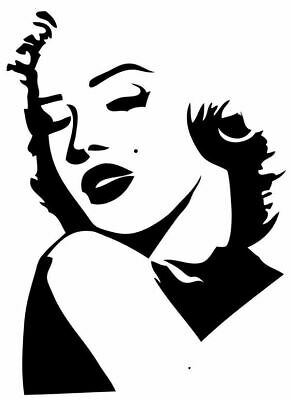
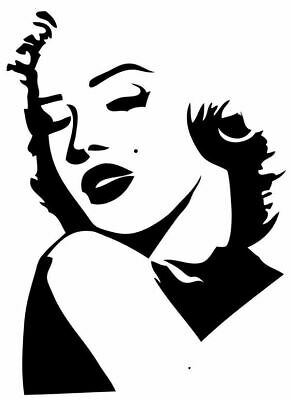

O que é gestalt
Gestalt é estudo da percepção humana em relação as formas, a existência de padrões de comportamento visual que o ser humano tem. Esses padrões compõem a base para as Leis da Gestal. Essa ciência defende que, para se compreendermos as partes de uma forma, é necessário antes, entender o todo que o envolve e o compõe.
Em outras palavras, poderíamos dizer que o Gestalt, estuda como o nosso cérebro percebe as formas. Poderíamos traduzir Gestalt como “A psicologia das Formas”. Ele entende que nossa percepção das coisas se dá como um todo, de uma forma unificada, e não em pontos isolados. O processo de interpretação de uma forma está relacionada com forças externas e internas.
As forças externas são provenientes da luz do objeto que o objeto reflete para a nossa retina. As forças internas estão relacionadas ao processo fisiológico do nosso cérebro. Dadas a partir da estimulação (forças externas) nosso sistema nervoso tende a organizar e estabelecer as formas de modo coerente e unificados. Essa regulação do cérebro é espontânea. Não podemos controlar. E que o nosso cérebro ao ver alguma forma, ele tenta relacionar a informação com algo que já vimos no passado e que está armazenado na nossa memória. Então, a teoria Gestalt nos diz que só através da percepção de um todo é que o cérebro consegue interpretar e assimilar uma forma ou um conceito.
Para que serve
O mundo visual é tão complexo que o cérebro humanos desenvolveu estratégias para lidar com toda essa confusão. Nossa mente sempre vai procurar a solução mais simples para um problema (Navalha de Occam). Uma das formas que a nossa cabeça faz isso é através da formação de grupos de itens que possuem uma característica em comum. Muito do que você estuda sobre a gestalt é em relação a como estes grupos se formam e qual efeitos eles possuem na nossa percepção. Quanto mais forte o grupo, mais forte a Gestalt.
É este grupo que contribui para a unidade no design. A Gestalt é a ferramenta mais poderosa que o designer tem para criar algo único. Esses mesmos conceitos que formam os grupos podem ser revertidos para desagrupar os itens, afim de torná-los únicos. Essa é a base para a criação da variedade, que dá interesse a uma imagem.
O truque é balancear o único com a variedade: Muitas unidades iguais e o design pode parecer monótono e repetitivo; muita variedade e pode parecer algo caótico e sem sentido. Entender os conceitos da Gestalt pode ajudar um designer a controlar a unidade e variedade.
Leis da Gestalt
A corrente teórica gestaltista formulou algumas leis ou princípios básicos que explicam como a percepção humana funciona e se organiza.
Lei da Unidade
A lei da unidade consiste em afirmar que a percepção de um elemento pode ser construído por uma ou até mesmo várias partes que constroem o todo. Sendo assim, uma unidade é percebida como um elemento único.
A unidade é todo elemento possível de ser compreendido como um só e segregado daquilo que o cerca, mesmo que ele seja composto de várias outras partes.
por exemplo, a bola é uma unidade, porém, cada hexágono da bola pode ser compreendido como uma unidade à parte em um leitura mais próxima.
Lei da Segregação
Essa lei foca na capacidade perceptiva de isolar, evidenciar ou identificar objetos, ainda que sobrepostos, dentro de uma composição. Isso acontece por causa da variação estética (cor, textura, sombra, brilho, etc) que um elemento possui em relação ao outro.

Lei da Unificação
Na lei da unificação, mesmo uma imagem abstrata pode ser entendida pela mente humana, pois preenchemos os espaços vazios instintivamente.

 

Lei do Fechamento
Isso significa que, ao deixar a mente se guiar pela continuidade de uma forma, ela já é capaz de prever toda a sua estrutura sozinha.
Esta é uma das mais aplicadas leis da gestalt. É possível encontrá-la em diversos logotipos famosos, tais como: Carrefour, NBC e Johnnie Walker, entre outros. A lei do fechamento parte do princípio de que o nosso cérebro “fecha” a formação de imagens completas quando vemos apenas formas inacabadas ou silhuetas.
Isso significa que, ao deixar a mente se guiar pela continuidade de uma forma, ela já é capaz de prever toda a sua estrutura sozinha.

Lei da Continuidade
A continuidade diz respeito à forma como a sucessão de elementos e o fluxo de informações funciona em nosso cérebro. Ela representa, ainda, a tendência de que objetos acompanhem outros no sentido de alcançar uma forma — seja pelo uso de cores, volumes, texturas e formas estruturalmente estáveis. Muito presente na arquitetura de edifícios grandes, escalas de cores e diagramação de textos, a continuidade procura estabelecer a melhor percepção possível aos olhos.
Lei da Proximidade
Elementos distintos que se posicionam de formas muito próximas uns dos outros tendem a ser percebidos juntos. Consequentemente, também são interpretados como apenas uma unidade. Essa impressão é ainda mais forte quando esses elementos são semelhantes.

Lei da Semelhança
Aqueles objetos que possuem formas, cores ou aparência geral semelhante também tendem a ser interpretados como uma só unidade. Na publicidade, essa lei geralmente é utilizada para criar releituras a partir do agrupamento de outras formas que são iguais ou parecidas entre si
Lei da Pregnância
Essa lei (também conhecida como “boa forma”) nada mais é do que o princípio básico da percepção visual da Gestalt. Sempre enxergamos a composição visual geral como um todo antes de nos aprofundarmos nos seus elementos mais complexos.
Assim, existem composições que seu cérebro consegue ler rapidamente e com clareza, pois são homogêneas e harmônicas. Os objetos que possuem essas características são classificados como de alta pregnância.
Por outro lado, um objeto de baixa pregnância tende a ter uma organização visual complicada e confusa. Sendo assim, é possível afirmar que quanto maior for a pregnância da forma, mais eficiente será a comunicação com o seu receptor.